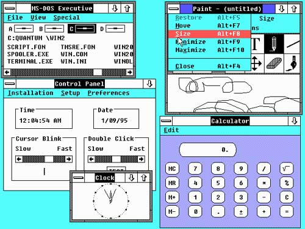
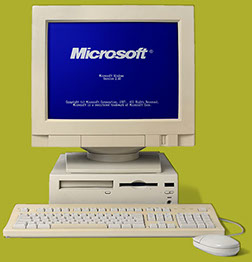

Windows 2.0, випущена в 1987 році, була наступною важливою кроком у розвитку операційних систем
Microsoft Windows. Ця версія внесла значні поліпшення у порівнянні з попередньою версією, включаючи
підтримку багатозадачності, розширені можливості графічного інтерфейсу та підтримку різних графічних
роздільностей.
У Windows 2.0 також було вдосконалено графічний інтерфейс, включаючи покращені іконки, меню та
курсор миші. Були додані нові програми, такі як Control Panel (Панель керування), що забезпечили
користувачам більшу гнучкість у керуванні параметрами системи.
Крім того, Windows 2.0 підтримувала різні графічні роздільності, що дозволяло користувачам працювати
на екранах з вищою роздільністю, що було важливою зручністю для користувачів з більш високими
вимогами до графіки.
В цілому, Windows 2.0 відіграла важливу роль у подальшому розвитку графічних інтерфейсів та роботи з
персональними комп'ютерами, встановивши стандарт для подальших версій операційних систем Windows.
2. ІНТЕРФЕЙС
Інтерфейс Windows 2.0, випущений в 1987 році, представляв собою значний крок уперед у порівнянні з
попередньою версією Windows 1.0. У Windows 2.0 було внесено численні поліпшення, які значно
покращили взаємодію користувачів з операційною системою.
Однією з ключових особливостей інтерфейсу Windows 2.0 була підтримка багатозадачності. Тепер
користувачі могли запускати кілька програм одночасно і перемикатися між ними, що раніше було
неможливою задачею в Windows 1.0. Це робило робочий процес більш ефективним і продуктивним.
Графічний інтерфейс Windows 2.0 також був вдосконалений. Іконки були більш деталізованими та
кольоровими, що полегшувало їх візуальне розрізнення. Меню було розширено, надаючи більше опцій
користувачам при взаємодії з програмами та файлами.
Windows 2.0 також вводив нові елементи інтерфейсу, такі як Control Panel (Панель керування), яка
дозволяла користувачам зручно налаштовувати параметри системи та програм. Це зробило управління
комп'ютером більш зручним та доступним.
Хоча інтерфейс Windows 2.0 виглядав дещо застарілим за сучасними стандартами, його вдосконалення
відносно Windows 1.0 було значним кроком вперед у розвитку графічних інтерфейсів для операційних
систем, встановлюючи основи для подальшого розвитку Windows у майбутньому.

Інтерфейс Windows 2.0

Компютор з Windows 2.0
3. Думка користувачів
У 1987 році, коли була випущена Windows 2.0, думки користувачів були змішаними, але загалом
позитивними. Деякі користувачі оцінювали значні поліпшення в порівнянні з попередньою версією,
зокрема можливість багатозадачності та покращений графічний інтерфейс. Ці поліпшення робили робочий
процес більш продуктивним та зручним.
З іншого боку, деякі користувачі могли відчувати, що Windows 2.0 все ще залишався обмеженим
порівняно з іншими операційними системами того часу, особливо у порівнянні з деякими версіями DOS,
які мали велику популярність серед бізнес-користувачів. Деякі можливості, які зараз вважаються
стандартними, такі як мережеві функції, ще не були доступні в Windows 2.0.
Проте, не зважаючи на ці обмеження, Windows 2.0 встановив стандарт для майбутніх версій операційної
системи, надаючи користувачам нові можливості та функції, які значно покращили їх досвід роботи з
комп'ютером. Це був важливий крок у розвитку графічних інтерфейсів та роботи з персональними
комп'ютерами, який відігравав ключову роль у популяризації Windows серед широкого кола користувачів.